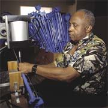

- Vocational Rehabilitation And Placement
- Product Assembly
- Kit Assembly
- Packaging (Shrink, Bubble & Skin Wrap , Blister Pack)
- Repackaging
- Heat Sealing
- Mail Preparation
- Collating, Folding, Sorting
- Braille Translation
- Chair Caning
|  |
The Center offers many opportunities for the visually impaired to acquire skills necessary to enhance or develope a career. Hand in hand with our career development, the Center provides several unique services to the business community.
|